— SEZIONE 1
Tenuta Odegitria: il matrimonio in un vero borgo di trulli
Avete cercato la Puglia autentica. Non la versione da catalogo, non il set fotografico costruito per farla sembrare tale. Avete cercato il territorio vivo — i trulli, i vigneti, la Valle d’Itria — e volevate sposarvi lì dentro, non davanti.
Quando arrivate a Tenuta Odegitria, succede qualcosa che è difficile da spiegare prima di viverlo: la strada lascia la statale, il paesaggio si apre su colline e vigneti che sembrano immobili nel pomeriggio pugliese, e davanti a voi appare un borgo di trulli settecentesco unico nel suo genere.
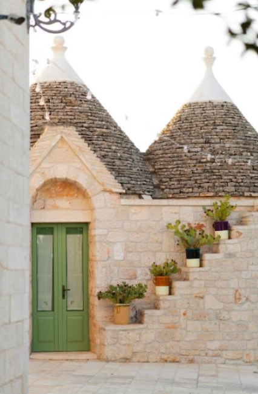
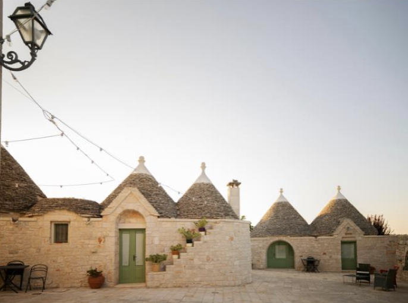
Non è una location che ha acquisito dei trulli come elemento scenografico. Sono trulli autentici del ’700, con le loro pietre a secco, i loro coni bianchi, i loro cortili che raccontano secoli di vita in questo angolo di Puglia che il mondo conosce con il nome di Valle d’Itria.
— SEZIONE 2
I vostri ospiti si fermeranno. Guarderanno. E prima ancora di dire qualcosa, tireranno fuori il telefono.
Non perché glielo abbiate chiesto. Ma perché quello che vedono non lo hanno mai visto prima.
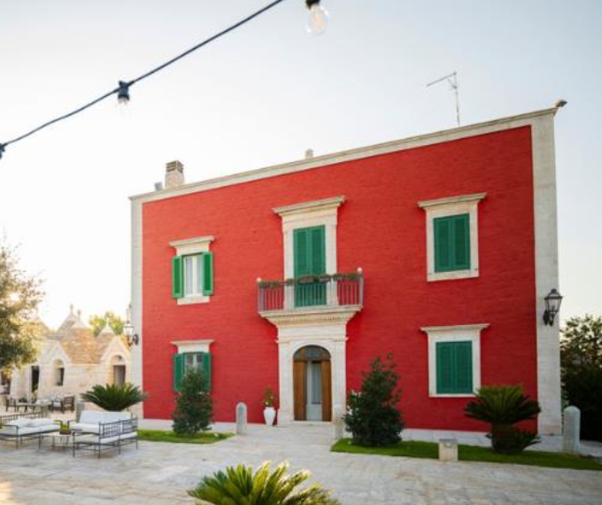
Quando avete cominciato a cercare una location, probabilmente avevate in mente qualcosa di preciso: un luogo che fosse davvero pugliese — non nella retorica del marketing, ma nella sostanza delle pietre.
— SEZIONE 3
Un luogo dove potersi sposare con rito civile senza dover organizzare una processione di macchine verso il municipio.
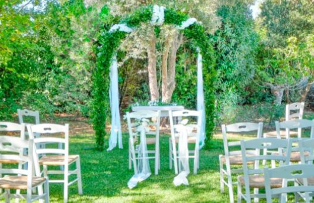
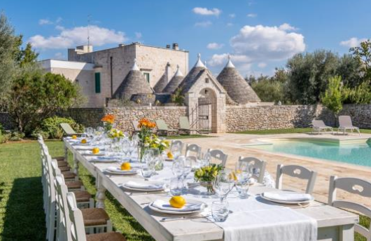
Un luogo dove i vostri ospiti non finissero annoiati nello stesso ambiente per otto ore di fila.
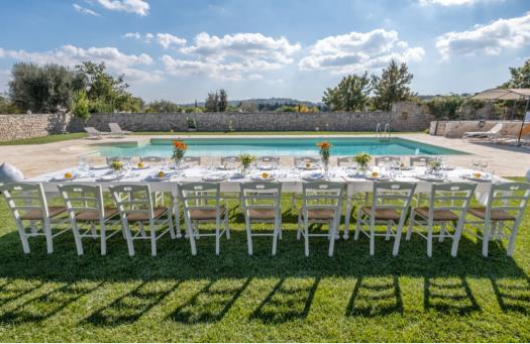
Un luogo dove scegliere il vostro catering, i vostri fornitori, il vostro stile — senza dover ricorrere a un pacchetto rigido.
Avete visitato masserie bellissime. Avete ricevuto offerte complete. E ogni volta, dentro di voi, è rimasto qualcosa di irrisolto: quella sensazione che steste scegliendo la soluzione migliore disponibile, non la soluzione giusta...
— SEZIONE 4
Un borgo autentico del Settecento immerso tra vigneti e ulivi, con 8 ambienti diversi per una giornata che non si ripete mai uguale, rito civile legale con casa comunale annessa, libertà totale di scelta sui fornitori, una sala con vetrate panoramiche che trasforma anche il giorno di pioggia in qualcosa di bello, e i trulli dove dormire la notte stessa — senza spostarsi, senza finire la magia troppo presto.
Quindi vi starete chiedendo...
Perché Tenuta Odegitria, tra tutte le location della Valle d'Itria?
Perché è l'unico borgo di trulli autentico del Settecento nella zona con:
- rito civile legale in loco
- open catering completo
- piano B panoramico incluso
- pernottamento nei trulli integrato.
Non è una formula — è un luogo che esiste da tre secoli e che Anna Maria e Giovanni hanno scelto di condividere.
Continuate a leggere perché nelle prossime pagine troverete:
- cosa rende uno spazio davvero autentico e cosa lo distingue da chi si limita a sembrarlo
- come funziona una giornata a Tenuta Odegitria dall'arrivo al giorno dopo
- e perché la libertà di scelta sui fornitori non è un dettaglio operativo ma una dichiarazione di rispetto nei vostri confronti.
— SEZIONE 6
Ci sono cose che si notano subito, visitando le location wedding pugliesi.
E ci sono cose che si capiscono solo dopo, quando ci si siede a pensare a quello che si è visto.
Quello che si nota subito:
I trulli, i vigneti, le luci di rame, le tavole allestite con fiori bianchi.
È bello. È riconoscibile.
È — diciamolo — già visto.
Quello che si capisce dopo:
- Che la maggior parte di quelle location ha un solo ambiente principale, con spazi accessori aggiunti nel tempo per gestire la crescita delle richieste.
- Che la cerimonia si fa in un posto, poi si carica tutti in macchina per andare in comune a firmare, poi si torna, poi si aspetta, poi finalmente si comincia.
- Che il catering è quello della struttura, con il menu che scegliete nel catalogo — non nella realtà.
- Che se piove, il piano B è un tendone bianco teso nel parcheggio.
- Non stiamo parlando di location scadenti. Stiamo parlando di compromessi che diventano visibili solo quando è troppo tardi per cambiarli.
— SEZIONE 7
Tenuta Odegitria non è stata “ottimizzata” per il wedding negli ultimi anni.
È un borgo che esiste dal Settecento, con una coerenza architettonica e paesaggistica che non si costruisce né si acquista.
Ogni cortile, ogni tholos, ogni angolo del querceto è lì da prima che nascesse il settore degli eventi nuziali.
E questa differenza — tra autenticità di sostanza e autenticità di allestimento — si sente fisicamente nel momento in cui ci si entra.
Anna Maria e Giovanni lo sanno.
Per questo hanno costruito un modello che non impone nulla: libertà di scegliere il catering, libertà negli allestimenti, libertà di immaginare la giornata senza essere guidati da un format preconfezionato.
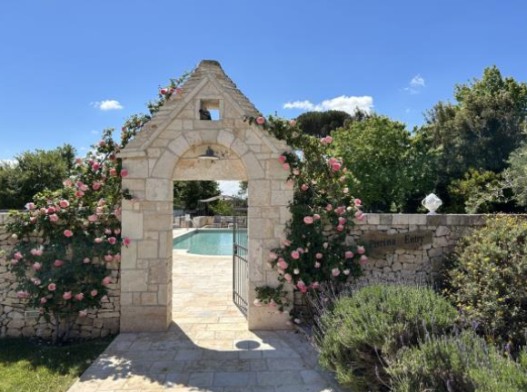
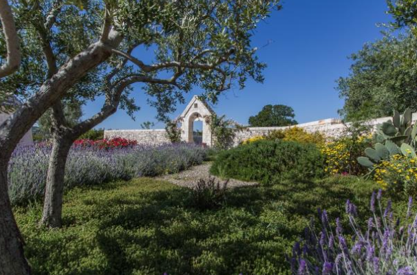
— SEZIONE 8
GLI SPAZI: UN BORGO CHE SI SCOPRE
Il primo impatto: varcare una soglia nel tempo
A due chilometri da Martina Franca, quattro da Locorotondo, un chilometro dalla SS 172 dei Trulli si trova Tenuta Odegitria.
Il viale di accesso è già un cambio di stato: da un lato la strada, dall'altro un'altra epoca.
I trulli settecenteschi in pietra a secco, il giardino all'italiana, il verde che si alterna alle pietre bianche.
C'è una qualità del silenzio, qui, che non appartiene alle location progettate per fare rumore.
— SEZIONE 9
Il querceto e il giardino: la cerimonia immersa nella Valle d’Itria
Le opzioni per la cerimonia:
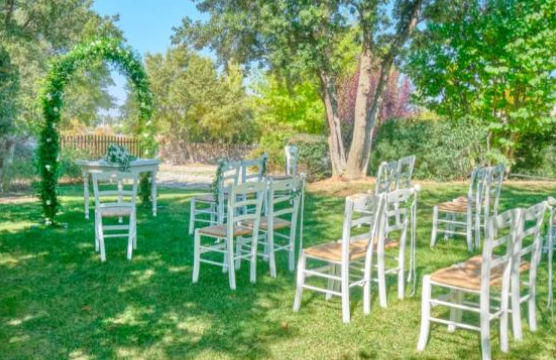
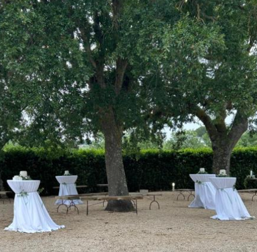
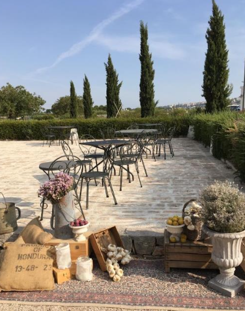
Condividono una caratteristica che nessun fioraio può replicare: il paesaggio vero intorno.
Vigneti, colline, i profili dei paesi della Valle d’Itria sullo sfondo.
Una luce che cambia durante il giorno e che, al tramonto, trasforma qualsiasi scenario in qualcosa di irripetibile.
Oppure per la sua caratteristica di essere già naturalmente ombreggiata e fresca potrebbe essere una zona ideale per organizzare il rito civile, senza dover mettere degli antiestetici ombrelloni che comunque non riparano dal caldo afoso.
— SEZIONE 10
Il querceto e il giardino: la cerimonia immersa nella Valle d’Itria
La casa comunale annessa permette di celebrare il rito civile con pieno valore legale direttamente qui, senza trasferimenti, senza attese, senza interruzioni nel filo emotivo della giornata.
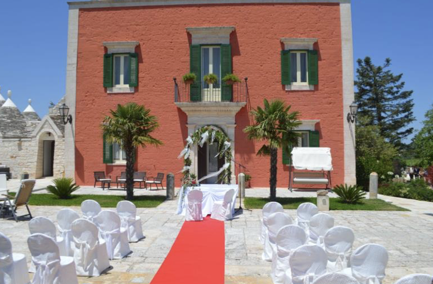
Le promesse, gli ospiti, il panorama: tutto nello stesso posto, nello stesso momento.
Questa continuità — così semplice a nominarla, così rara a trovarsi — cambia completamente la qualità dell'esperienza per voi e per chi vi vuole bene.
— SEZIONE 11
Il querceto e il giardino: la cerimonia immersa nella Valle d’Itria
E se il tempo non dovesse cooperare, la sala coperta con vetrate panoramiche non è un ripiego...
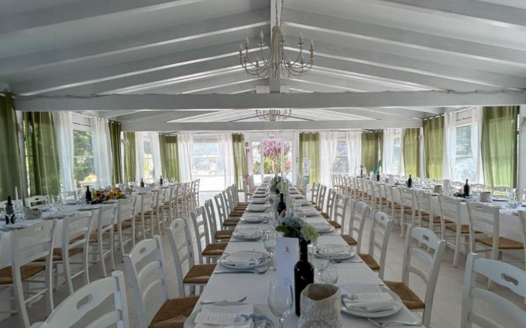
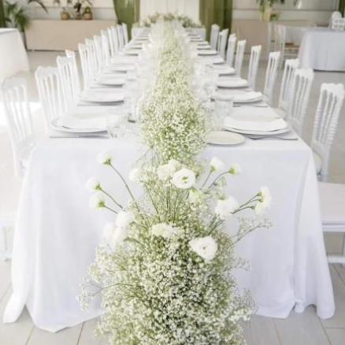
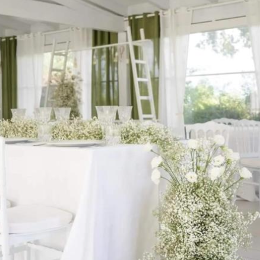
...è uno spazio altrettanto suggestivo dove il paesaggio rimane visibile, dove la luce filtra attraverso i vetri, dove la Valle d’Itria è ancora lì, intorno a voi.
— SEZIONE 12
IL BORGO DI TRULLI: l’aperitivo che diventa esplorazione
Quattro ambienti completamente diversi tra loro, disponibili contemporaneamente durante l’aperitivo.
I vostri ospiti non stazionano in un unico punto con il bicchiere in mano — si muovono, scoprono, fotografano, si incontrano in angoli inaspettati.
Questo movimento libero tra scenari diversi ha un effetto preciso sull’atmosfera: mantiene viva la sensazione di sorpresa, crea conversazioni che non sarebbero nate altrove, produce fotografie che nessun fotografo deve orchestrare.
La location lavora per voi, spontaneamente.
— SEZIONE 13
Cena tra le pietre a secco: quando il ristorante entra nel Settecento
Borgo dei Trulli, Piscina, Aia, Sala Interna: la cena può svolgersi in ambienti completamente diversi a seconda della stagione, dello stile, della visione della coppia.
Le pareti di pietra a secco dei trulli autentici creano un'atmosfera di immersione che nessun arredatore può costruire da zero — è la stessa pietra che ha resistito per tre secoli, ed è quella che vedranno i vostri ospiti mentre mangiano.
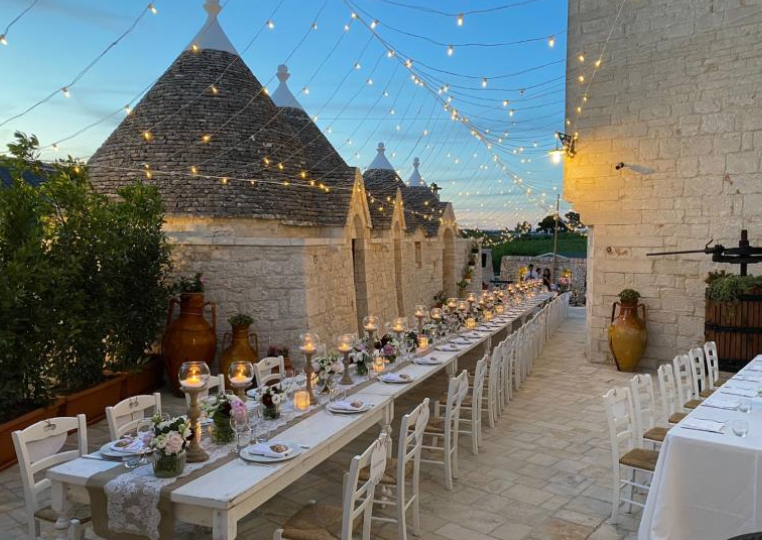
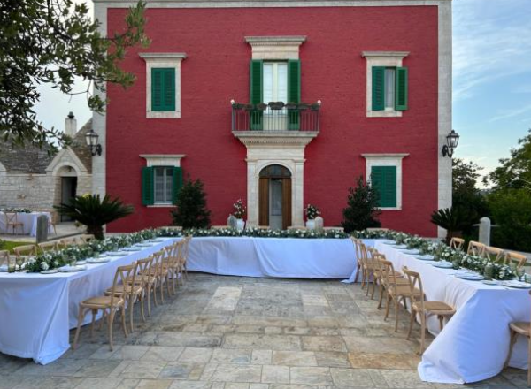
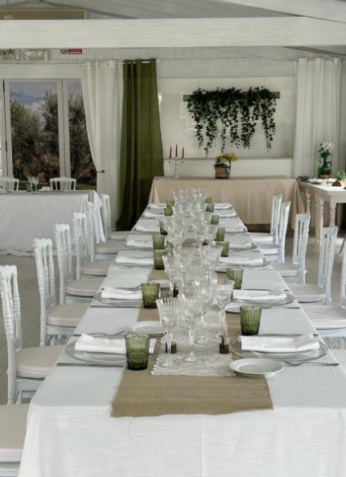
— SEZIONE 14
Cena tra le pietre a secco: quando il ristorante entra nel Settecento
- La scelta del catering è completamente libera: potete portare il vostro, oppure scegliere tra una rosa di catering selezionati — Sovrano Eventi di Alberobello, Rotondo Catering di Palagiano, Il Fagiano di Fasano — che conoscono la struttura e sanno valorizzarla.
- La filosofia gastronomica è regionale, stagionale, gourmet: cucina pugliese vera, non semplificata per il grande numero.
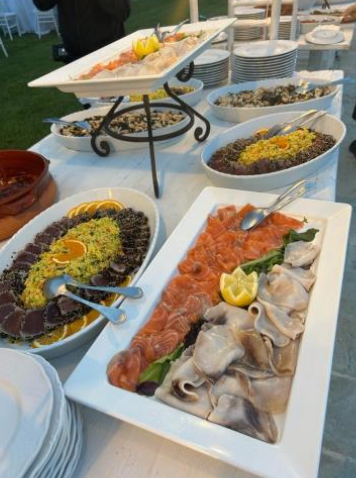
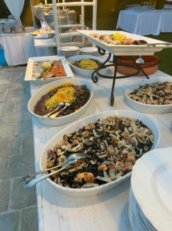
- La degustazione con il catering scelto avviene quattro-cinque mesi prima dell’evento: assaggiate, valutate, modificate. Arrivate al giorno del matrimonio sapendo esattamente cosa troveranno i vostri ospiti in tavola.
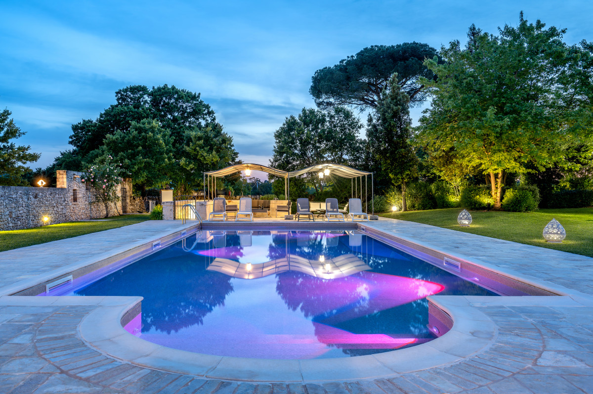
— SEZIONE 16
La suite nel trullo: quando il matrimonio non finisce a mezzanotte
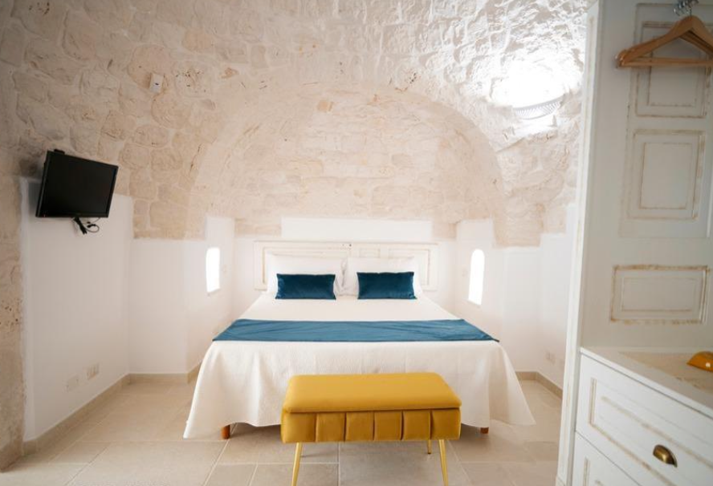
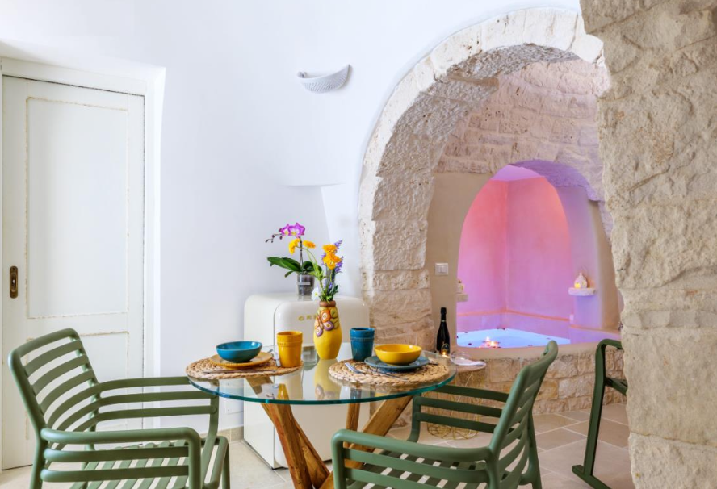
— SEZIONE 17
Le soluzioni per i vostri ospiti
E inoltre, tre appartamenti a trullo per due-quattro persone e tre camere in masseria con vista panoramica completano l'ospitalità per i familiari più stretti — colazione inclusa a buffet la mattina dopo.
Il matrimonio non si conclude il sabato sera: continua domenica mattina, in questo posto, con le persone che contano di più.
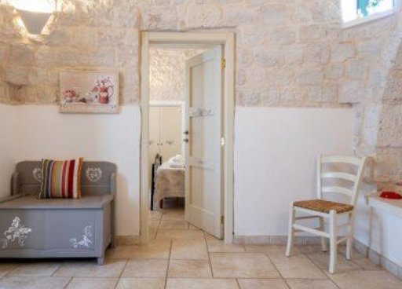
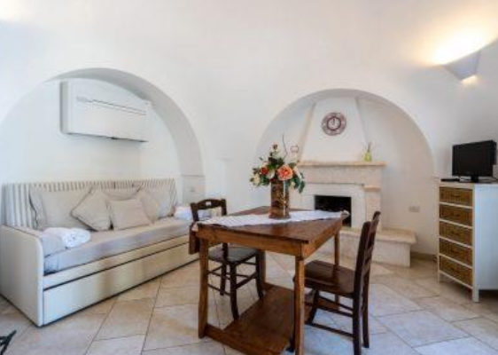
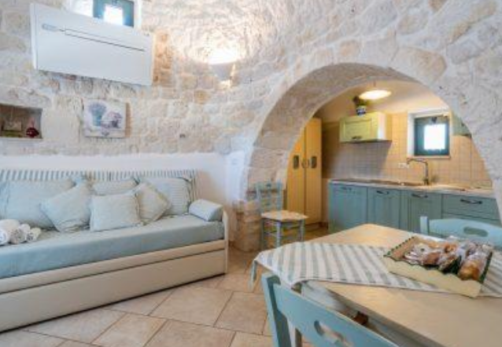
Su richiesta, il wedding weekend si estende: brunch in piscina, esperienze locali, la bellezza di abitare questo luogo per più di un giorno.
— SEZIONE 18
ANNA MARIA E GIOVANNI: l’accoglienza di chi ha scelto di vivere qui
Anna Maria Calella e Giovanni Conserva non gestiscono Tenuta Odegitria da un ufficio a distanza. Ci vivono, ci lavorano, la conoscono in ogni stagione e in ogni luce.
La loro filosofia di accoglienza — diretta, personale, senza intermediari — nasce da questa prossimità: non stanno vendendo uno spazio, stanno condividendo un luogo che appartiene loro nel senso più profondo della parola.
Quando arrivate per il sopralluogo, sono loro ad accompagnarvi. Quando avete una domanda nei mesi di preparazione, è Anna Maria a rispondere. Quando il giorno del matrimonio succede qualcosa di inaspettato, è Giovanni a gestirlo.
Questa continuità — la stessa persona dal primo contatto all'ultimo brindisi — è rara nel settore wedding, dove spesso si firma con uno, si pianifica con un altro e si affronta il giorno con un terzo che non si è mai visto prima.
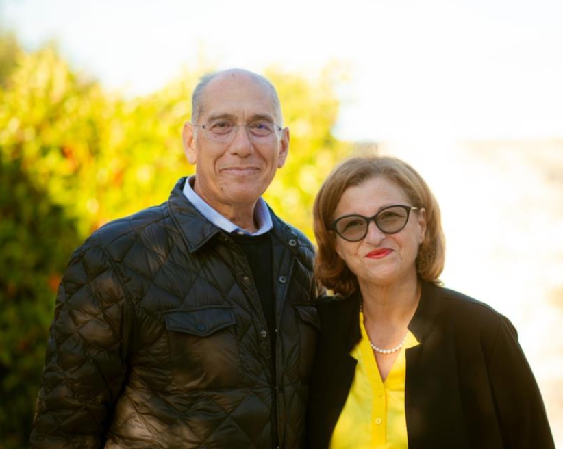
— SEZIONE 19
15 anni di esperienza, 70 matrimoni, le stesse parole nelle recensioni
In quindici anni di attività e settanta matrimoni ospitati, le parole che tornano nelle testimonianze degli sposi sono sempre le stesse: disponibilità, cortesia, autenticità.
A queste si aggiunge, costante, la variante più bella: “ci siamo sentiti a casa, ma in un posto da sogno”.
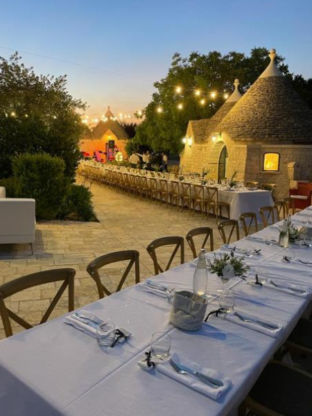
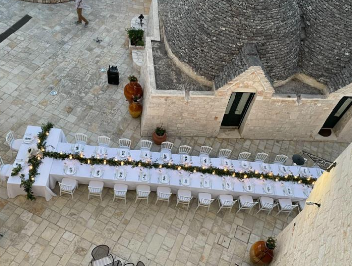
Questa combinazione — il calore familiare di chi vi accoglie come ospiti di casa, dentro uno spazio che è oggettivamente straordinario — è ciò che trasforma un matrimonio da “bello” a “indimenticabile nel modo giusto”.
— SEZIONE 20
Esclusività della location
Cosa vuol dire avere la location in esclusiva?
Non solo che non ci siano altri matrimoni in contemporanea, o subito dopo, ma anche che non ci siano altri eventi minori o altri ospiti esterni al tuo matrimonio presenti in struttura il giorno delle tue nozze, perché magari stanno alloggiando nelle camere che vengono lasciate a disposizione di clienti occasionali.
Sicuramente vuoi evitare di avere curiosi e imbucati al tuo grande giorno, così come i tuoi ospiti non vorrebbero mai trovarsi nella situazione di dover bere il caffè di fretta perché invitati ad andarsene perché deve iniziare il turno serale.
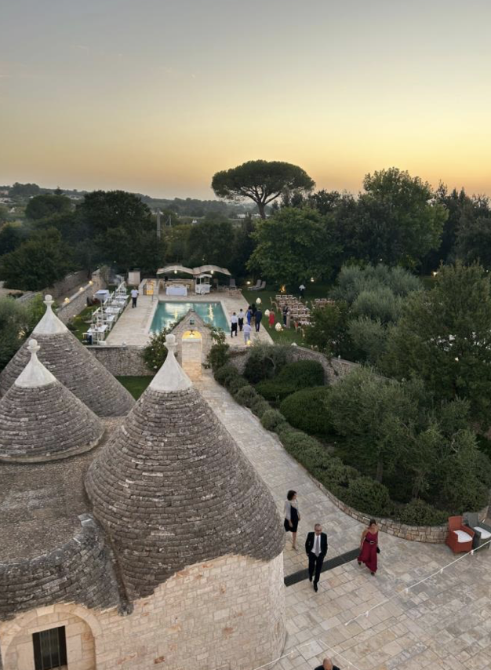
— SEZIONE 21
Ora tocca a voi!
Venite a vederlo. Non ci sono parole che reggano il confronto con il momento in cui entrate nel borgo per la prima volta e capite, senza bisogno di spiegazioni, che la ricerca è finita.
— CONTATTACI